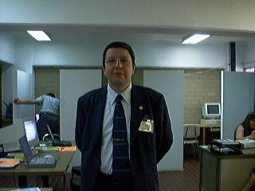

Historia de la Medicina Homeopática en México
| 
HISTORIA DE LA MEDICINA HOMEOPATICA EN MEXICO (1849-2001) El hablar de 150 años de historia en unas cuantas páginas no es fácil, sin embargo, el objetivo de este pequeño ensayo es mostrar el desarrollo de la ciencia homeopática en nuestro país desde sus inicios hasta nuestros días, dividido en 5 etapas, de acuerdo a los acontecimientos más importantes que definen cada una de ellas. La Etapa I (1849-1893) incluye los primeros años caracterizados por las prácticas aisladas de los médicos homeópatas. La Etapa II (1893-1921) contiene los años de la oficialización y la prosperidad de asociaciones y escuelas. La Etapa III (1921-1940) consigna la mayoría de los conflictos con las autoridades. La Etapa IV (1940-1960) se caracteriza por un lento florecimiento de las escuelas y grupos de estudio. Es durante la etapa V (1960- ) que se inicia y prosperan los estudios de posgrado en México. Este trabajo comprende diversos acontecimientos en la historia de nuestra joven república, especialmente años muy difíciles. Palabras clave: Iniciadores. Primer hospital y escuela homeopaticos reconocidos por el gobierno en el mundo entero. Conflictos. Decretos presidenciales INTRODUCCION Y MARCO HISTÓRICO (1) La llegada de los primeros médicos homeópatas a México en el año de 1849 (2) coincide con la pérdida de más de la mitad del territorio nacional (2.1 millones de Km cuadrados) después de la guerra con los Estados Unidos y el fin de la décima presidencia de Antonio López de Santa Anna, figura sombría en la historia de nuestro país. Entre los años 1848 a1853 diversos gobiernos militares interinos ostentaron el poder en la caótica nación, hasta que nuevamente el Gral. Santa Anna se instala por undécima y última vez en la presidencia, cobrando impuestos hasta por el número de puertas, ventanas y mascotas de las casas. Las guerras de Reforma, la Constitución de 1857, la guerra de los 3 años (1858-1860), la intervención europea, el efímero Imperio de Maximiliano y Carlota (1864-1867) y la restauración de la república caracterizaron a los primeros años de la homeopatía en México. El largo periodo de paz y prosperidad del porfiriato (1876-1811) permitió que finalmente las agrupaciones de estudio prosperaran y pudieran fundarse escuelas y hospitales homeopáticos (3). Después de un breve período de gobierno democrático de Francisco I. Madero (15 meses) nuevamente la guerra y la destrucción asolaron a nuestra patria, en esta ocasión fue Revolución Mexicana, guerra fraticida y nefasta, que duró más de una década. Después del asesinato de Alvaro Obregón en 1924, el Gral. Plutarco Elías Calles fue la figura dominante de la política mexicana. Durante su gobierno, caracterizado por las tendencias marxistas y la persecución religiosa se llevó a cabo la Guerra de los Cristerios (1927-1929), evento que contó con mayor participación popular que la propia Revolución Mexicana. A partir de 1928 se inicia el período denominado maximato, ya que Calles se proclamó el Jefe Máximo de la Revolución. Después de los breves gobiernos interinos de Emilio Portes Gil y Pascual Ortiz Rubio tomó posesión del gobierno del país el Gral. Lázaro Cárdenas. (1934-1940), último militar en la presidencia de la república. En su sexenio se estableció un orden social y se desterró definitivamente a Calles de toda influencia política. Fue durante este período que los médicos homeópatas libraron sus más intensas batallas, llegando a derrotar al Presidente de la República (4). Durante los gobiernos siguientes el país comenzó un largo período de recuperación, llegando a su máximo en los gobiernos de Adolfo Ruiz Cortines (1952-1958), Adolfo López Mateos (1958-1964) y Gustavo Díaz Ordaz (1964-1970). Esta época se conoce en el lenguaje de los economistas como el desarrollo estabilizador, durante la cual México gozó de una gran estabilidad económica. Durante el sexenio siguiente (1970-1976) la economía nacional empezó a deteriorarse y a su fin se presenta una gran devaluación (de 12.50 a casi 20 pesos por dólar), que le quitó la paridad fija al peso mexicano y fue la primera de muchas que han ocurrido hasta ahora. Estos últimos años se han caracterizado por la inflación y las devaluaciones monetarias, en una palabra, por la crisis económica, que perdura hasta ahora. A partir de enero de 1994 se inició la guerrilla en el sur del país, con el movimiento abanderado por el Ejército Zapatista de Liberación Nacional, conflicto no resuelto hasta la fecha.
ETAPA I
LOS PRIMEROS (1849-1893) Correspondió a médicos españoles llegados de Cuba la introducción y la práctica de la medicina homeopática en nuestro país. Dentro de los diversos cronistas existen diferentes versiones, sin embargo, después de cuidadosas investigaciones podemos decir que el primero de ellos fue el Dr. Cornelio Andrade y Baz, quién arribó a las costas mexicanas en 1849. Venía como médico de cabecera de la familia Bringas y permaneció solo 6 años en México, radicando en Orizaba, Veracruz (2). El año de 1850 registra la llegada del Dr. Ramón Comellas (2), médico catalán excatedrático en la Universidad de Valencia, y, entre otras varias distinciones, fundador del Instituto Médico Valenciano (3). Es el autor de la primera publicación homeopática en nuestro país, titulada Reseña sobre la homeopatía dedicada a los mexicanos (5). Este pequeño escrito, de 24 páginas, contiene una breve introducción histórica así como las principales indicaciones que debe seguir el paciente de la medicina homeopática. Este hecho, así como él haber sido el primero en enseñarla, a sus principales discípulos, Julián González, y Rafael Degollado, le acreditan con toda justicia el ser considerado el introductor de la homeopatía en México. El Dr. Salvador Riera, también español, con títulos de las Universidades de Madrid y la Habana, arribó a Mérida, Yucatán en 1851, donde protagonizaría los capítulos iniciales de la historia de la homeopatía en Yucatán (6). 1854 registra la llegada del Dr. José María Carbó, medico catalán procedente de Cuba, quién llegaba expresamente a combatir la epidemia de fiebre amarilla que asolaba el puerto de Veracruz (7). Su destacada labor con los enfermos a su cargo en el castillo de San Juan de Ulúa le valieron un reconocimiento del presidente Santa Anna y el primer permiso para ejercer oficialmente la homeopatía en la República Mexicana (8). En 1855 arribó a México el Dr. Narciso Sanchíz, quién instruyó a los primeros prácticos mexicanos, Alfredo Domínguez Ugalde y Pablo Fuentes Herrera (9). En 1861 el Dr. Fuentes Herrera, junto con Pascual Bielsa, fundan la primera agrupación homeopática del país, la Sociedad Homeopática de México, con el objetivo primordial de experimentar la flora y fauna nacionales para elaborar una materia médica mexicana. La revista editada por este grupo, denominada La Gaceta fue la primera en su género en el país. (9). Desgraciadamente las precarias condiciones políticas determinaron que la vida de esta institución fuera solo de unos cuantos meses (9). El primer médico mexicano converso fue el Dr. Cresencio Colín, convertido a la homeopatía por el Dr. José Puig en 1870. Este hombre, de dedicación ejemplar, fue el principal promotor y difusor de los albores históricos de la homeopatía en México (10). La figura controversial de Julián González jugó un papel muy importante en aquellos años. Algunos autores lo consideran médico (10), y otros, como Ignacio Fernández de Lara (2) lo consideran práctico. Este hombre, nacido en Burgos, España en 1832 (2), fue el primer discípulo del Dr. Comellas, y el segundo en publicar sobre homeopatía en nuestro país. Su libro Tratado práctico de homeopatía y guía de las familias conoció 2 ediciones, en 1871 (10) y 1879 (11). Este texto contiene, entre otras cosas, una materia médica con referencias clínicas y el índice de 656 medicamentos con los que estaba surtida su farmacia, donde don Julián daba consulta en persona, y ocasionalmente, a los residentes en el interior del país, por correspondencia (11). Julián González también fundó la primera farmacia homeopática en el país, en 1867. En 1869 la farmacia quedó a cargo del Dr. Joaquín Salas, instalándose en la calle de San Francisco 12. Posteriormente cambió de domicilio a la Avenida 5 de Mayo 17, luego a las calles de Tacuba y finalmente a Belisario Domínguez 47 (8). Durante 1869, gracias a los esfuerzos de Fuentes Herrera y Julián González, se conjuntaron los principales homeópatas de la época con el fin de fundar una nueva agrupación homeopática. El 18 de agosto se presentó el proyecto que dio como resultado al Instituto Homeopático Mexicano. Este grupo empezó sus actividades el 10 de abril de 1870. No solo tenía por objeto el estudio y propagación del método homeopático, si no también la discusión científica y racional, que era publicada en la revista El Propagador Homeopático. (3) Esta publicación estaba a cargo de los Drs. Francisco Pérez Ortiz y José T. Hidalgo. En 1871 el Dr. Rafael Degollado fundó el primer hospital homeopático del país, en San Miguel de Allende, Guanajuato. Desgraciadamente, su vida fue corta (8). Este inmueble se conserva en la actualidad, en la calle de Diez de Sollano y Dávalos no 15. En 1980, la Asociación de Médicos Homeópatas Cirujanos y Parteros del Centro A. C. colocó una placa conmemorativa, que a la fecha ostenta este predio en su fachada (12). La homeopatía se difundió por diversas regiones de la República, El Dr. Francisco Marchena en Puebla, Miguel Cruz y Canto en Toluca, Nemesio de los Santos Rubio en Yucatán y el Dr. Ismael Talavera en Veracruz continuaron con la labor iniciada por Ramón Comellas en 1851 (13). En 1874 se fundó en la ciudad de México la Sociedad Médico Homeopática Mexicana (13) a iniciativa de los Drs. Enrique Carrera Lardizábal, Valdés y Morales, Barona, Medina, Chávez, Antonio Salas, Ramírez de Arellano, José T. Hidalgo, Rafael Navarrete y Pablo Fuentes y Herrera, entre otros. Establecieron un consultorio donde se dieron durante el primer año 8,947 consultas (8). El órgano de dicha institución fue denominado El Faro Homeopático, cuyo primer número se publicó el 15 de abril de 1874 (9). El otoño de 1874 marcó la reorganización del Instituto Homeopático Mexicano bajo nuevos estatutos y una actividad más coordinada en su labor difusora de la homeopatía. Las conferencias se reiniciaron el 21 de noviembre (14). Su nueva publicación se denominó La Reforma Médica, y se editó como la segunda época del Propagador Homeopático. Aparece por primera vez en enero de 1875. Los diplomas que otorgaba el Instituto estaban bellamente diseñados, contenían la imagen de Samuel Hahnemann en su parte superior, encerrada en un recuadro, y en la parte inferior un águila con las alas extendidas y una serpiente en el pico. A los lados 2 columnas con las leyendas materia médica y enfermedades crónicas del lado izquierdo y experimentación fisiológica y dinamismo vital del lado derecho. Contenían también el sello de la Institución, las firmas del presidente y el secretario así como las fojas en el libro de registro respectivo (15). En 1879 2 legislaturas estatales reconocieron oficialmente a la medicina homeopática, gracias a los esfuerzos de Francisco Marchena en Puebla e Ismael Talavera en Veracruz, ambos de los pioneros más antiguos en la provincia mexicana. Juan Crisóstomo Bonilla, Gobernador de Puebla (16) y el Gral. Luis Mier y Teherán, Gobernador de Veracruz (17) emitieron decretos instituyendo la enseñanza y práctica de la homeopatía en sus estados. En 1885, tanto el Instituto Homeopático Mexicano como la Sociedad Médico Homeopática Mexicana había caído en un largo y profundo letargo. Fue gracias a los esfuerzos de Cresencio Colín, del Dr.Oriard, de nacionalidad francesa, y de un joven y aristocrático médico llamado Joaquín Segura y Pesado que la homeopatía vivió una nueva etapa (18). El Dr. Segura y Pesado había ya tomado contacto antes con la homeopatía por medio de la lectura del Organon y de algunos escritos de León Simón. De hecho viajó por Alemania y Francia para conocer a la nueva doctrina médica y ya prescribía medicamentos homeopáticos, que se cree le habían sido obsequiados por Cresencio Colín (19). Después de que el Dr. Colín visitara personalmente a todos los médicos homeópatas radicados en la ciudad de México (20), se convocó a la formación de un nuevo grupo de estudio y difusión. Esta nueva agrupación, llamada Círculo Homeopático Mexicano albergaría a todos los seguidores de la medicina homeopática en México y trataría de lograr lazos de unión y compañerismo entre ellos. El órgano de este grupo se denominó La Reforma Médica, el mismo nombre que llevara en su primera época, cuando era editada por el Instituto Homeopático Mexicano. En la publicación se incluían las actas de las reuniones de los miembros del Círculo, así como artículos homeopáticos y comunicaciones de médicos homeópatas del interior del país y del extranjero. En su primer número, editado el 1 de julio de 1885, se habla por primera vez del uso de altas potencias en México, en este caso la 200 ch utilizada por el Dr. Joaquín Segura y Pesado en diversos trastornos respiratorios (18). Pronto se vio que la nueva sociedad cumplía ampliamente con todas sus metas. En cada sesión se proponían nuevos miembros y las filas del Círculo crecieron más y más. Cuando el cólera amenazó nuevamente al puerto de Veracruz los médicos homeópatas se prepararon a enfrentarlo con medicamentos homeopáticos, y de hecho redactaron un folleto (21, 22). El 11 de abril de 1886, durante la celebración del 131° Aniversario del Natalicio de Samuel Hahnemann y del primer año de existencia del grupo, concurrieron diversas personalidades del medio homeopático en México, como Bernardo de Mendizábal, colaborador y partidario de la homeopatía desde los tiempos de la fundación del Instituto Homeopático Mexicano por los Drs. Puig y Pérez Ortiz. De hecho, el Sr. Mendizábal auspició la fundación del malogrado hospital homeopático de la colonia de los Arquitectos (23). También asistieron don Julián González, y su hijo Joaquín, expresamente invitados a la celebración. Durante el brindis, el secretario del Círculo, Pablo Fuentes y Herrera, leyó un escrito de Julián González dirigido a las autoridades solicitando la fundación de una facultad oficial de medicina homeopática (23). Todos los médicos homeópatas concordaban con la idea, que cristalizaría los ideales y esfuerzos de los primeros pioneros de la medicina homeopática en México. El último brindis del festejo fue dedicado a estos primeros homeópatas en nuestro país (23). Como resultado de esta celebración hubo una mayor afiliación al Círculo, y una disposición nacional a seguir luchando por la causa de la homeopatía. El siguiente número de La Reforma Médica, apareció con 3 meses de retraso en julio de 1886. No era más el órgano del -Circulo-. Nuevamente ostentaba en su portada el nombre del Instituto Homeopático Mexicano. En su editorial, denominada -Ave Fénix-, los redactores de la revista, Joaquín Segura y Pesado, Joaquín González y Juan N. Arriaga daban la explicación de esta metamorfosis (24). A instancias de Francisco Aguilar y con el fin de retomar el nombre de la prestigiosa institución reconocida por las legislaturas de Puebla y Veracruz, todos los miembros del Círculo Homeopático Mexicano y con sus mismos reglamentos, decidieron denominar nuevamente al grupo como el Instituto Homeopático Mexicano. En esta misma editorial se consignan los conflictos de los homeópatas en defensa de su doctrina, con una apelación ante el Tribunal Superior. Este renacimiento tenía como fin una lucha ordenada y decidida por el futuro de la medicina homeopática en México. Al contenido habitual de la revista se adicionaron traducciones selectas de materia médica y ya no aparecieron más las actas de las reuniones de los miembros (24, 25). En el número correspondiente al 1 de julio de 1887 de La Reforma Médica el Dr. Francisco Félix Mendoza presentó un escrito titulado El Artículo 3° constitucional y el ejercicio de la Medicina. Después de fundamentar los antecedentes del estudio y enseñanza de la medicina homeopática en otros países del mundo, propone que se establezca una facultad de medicina homeopática por los médicos del Instituto, reconocida por el gobierno y de hecho plantea las cátedras así como la formación de un colegio. Los 2 últimos párrafos del artículo han sido transcritos a continuación (26). : Gobierno Mexicano, no es vuestra misión la imposición de las ciencias, sino proteger su libertad; cumplid con ese precepto constitucional y solo así obrareis como requiere la época. Instituto Homeopático Mexicano, adelante, fundad cuanto antes, cátedras donde enseñar con perfección nuestras doctrinas y de donde salgan los verdaderos médicos homeópatas mexicanos, con las garantías oficiales que os toca recabar del gobierno como único tribunal competente en el país, sed el Alma Mater. Durante los inicios de 1888 el Instituto Homeopático Mexicano inauguró un dispensario gratuito bajo la atención del Dr. Ignacio Fernández de Lara. El local fue facilitado por el Dr. Pánfilo Carranza, actual presidente, en su propia casa (27). El proyecto de la escuela cristalizó bajo la segunda presidencia del Dr. Joaquín Segura y Pesado en 1889, con el establecimiento de una Academia de Medicina, que impartiría cátedra de medicina en general y además enseñaría la doctrina homeopática. Esta escuela inició sus labores con el Dr. Segura y Pesado como director y el Dr. Bernabé Hernández como secretario. Las cátedras eran impartidas por: Joaquín Segura y Pesado, anatomía, Ignacio Fernández de Lara, clínica, Pablo Fuentes y Herrera, materia médica, Juan N. Arriaga, patología, Miguel Bachiller, higiene, Joaquín González, cirugía, Pablo Barona, fisiología, y Manuel M. de Legarreta, Farmacología (28). La Academia inicialmente comenzó sus labores en las calles de la Canoa N° 6 y 7 (hoy Donceles), para pasar posteriormente a Santa Teresa 18 (hoy República de Guatemala). El primer alumno recibido fue Fidel de Régules (28). Para el año de 1892 la labor del Instituto Homeopático Mexicano y su Academia era ya muy importante. En un pequeño hospital particular de Tacubaya el Dr. Segura y Pesado habían atendido gratuitamente a un gran número de enfermos, registrando cuidadosamente sus historias clínicas, con lo que fundamentaban la eficiencia de la medicina homeopática (28). De hecho, fue una curación homeopática la que predispuso al Gral. Porfirio Díaz, gobernante de nuestro país por aquellos años, hacia la homeopatía. De acuerdo a un relato referido por una de sus propias hijas, el Presidente fue tratado de una vieja osteomielitis por el Dr. Joaquín Segura y Pesado. La herida, secuela de la batalla de Veracruz, cicatrizó en 10 días (29). 1893 fue un año clave en la historia de la homeopatía en México. El acontecimiento más importante fue la fundación del Hospital Nacional Homeopático, del cual ya hablaremos más adelante. También de gran importancia fue la fundación de la Sociedad Hahnemann, que retomó los orígenes de la Sociedad Homeopática Mexicana (30). Este nuevo grupo se constituyó inicialmente por los Drs. Luis Alva, Juan N. Arriaga, Pablo Barona, Rafael V. Castro, Manuel Córdoba y Aristi, Feliciano Gómez Puente, Lino Mora, José I. Muñoz, Librado Ocampo, R. C. de los Ríos, Amalio Romero y Mariano Valdéz (31). Pronto contaron con nuevos miembros de la ciudad capital y de diversos estados de la República, como Chihuahua, Guerrero, Michoacán, Sinaloa, Guadalajara, Guanajuato, Querétaro, el Estado de México, Hidalgo, y Tlaxcala (32). En sus primeros años llegó a incluir cerca de 45 médicos (28). El órgano difusor de este grupo se denominó -La Homeopatía-, revista que merece una mención especial por su contenido y continuidad. Se editó ininterrumpidamente hasta 1913, año en que las condiciones políticas del país, en plena revolución, hicieron imposible que siguiera publicándose (33). A partir de 1893 los redactores responsables fueron Juan N. Arriaga, Rafael V. Castro, y. Amalio Romero. La revista constaba de un directorio social, una sección familiar, una sección científica, notas clínicas y variedades. Se acompañó de suplementos para médicos, como fueron la segunda edición de la Materia Medica de Farrington, los fascículos de Una Ciudad Maravillosa (temas de anatomía y fisiología ilustrados), escrito por Juan N. Arriaga, Característicos de la Materia Medica de Allen y Características de la Terapéutica Homeopática de Nash. El primer número de La Homeopatía fue premiado en la Exposición Universal de París en 1900 con diploma y medalla correspondiente (28). La segunda época de la revista se inició en 1933, y la tercera en junio de 1941, cuando los Laboratorios Similia reiniciaron la edición, en el mes de julio de 1941 tomó el nombre de La Homeopatía de México, con el que se conoce hasta ahora (34). La Sociedad Hahnemann trabajó decididamente por la práctica y difusión de la medicina homeopática bajo el lema -Constancia y estudio- (35). Fue ampliamente reconocida y su revista contaba con intercambio en varios países del mundo. La edición de La Homeopatía, las sesiones científicas y el trabajo de los asociados se suspendieron a fines de 1913 a causa de la guerra revolucionaria (33). La Sociedad Médico Homeopática Mexicana funcionó intermitentemente hasta el año de 1917. Su última mesa directiva estuvo constituida por Juan N. Arriaga como Presidente, Luis G. de Legarreta como Secretario y Manuel A. Lizama como Prosecretario (13). <>HISTORIA DE LA MEDICINA HOMEOPATICA EN MEXICO (1849-2001) ETAPA II LA OFICIALIZACION (1893-1921) Siendo ya el momento propicio para acometer el intento de fundar un hospital, cuatro médicos de la Academia de Medicina Homeopática llamados Joaquín Segura y Pesado, Ignacio Fernández de Lara, Ignacio María Montaño y Fernando Gómez Suárez dirigieron una petición al Lic. Romero Rubio, Ministro de Gobernación, para obtener un inmueble donde se pudiera ensayar la eficiencia de la medicina homeopática. En este extenso escrito, donde ponen en evidencia las bondades del método hahnemanniano y la situación internacional de la homeopatía por aquel entonces, estos médicos solicitan expresamente se les otorgara un pabellón que había sido recientemente equipado como hospital y ya estaba listo para ser utilizado (36). Este pequeño inmueble había sido acondicionado para enfrentar una epidemia de tifo que asolaba la Ciudad de México y era conocido como el Viejo Polvorín o el Polvorín del Virreinato (37). El edificio ostentaba en su fachada remates de cantera y lucía orgullosamente al frente el emblema de Castilla y León. Estaba ubicado en el barrio del Cuartelito y el gobierno había mandado ya construir un puente que lo comunicara con la calle del Resguardo (37). Sin más capital que el que sus propios medios pudieran otorgarles, estos 4 médicos iniciaron las labores en el hospital, que en un futuro sería conocido como el Hospital Nacional Homeopático. Las estadísticas del hospital eran publicadas en La Homeopatía y estaban bajo el escrutinio del Ministerio de Gobernación. Al año de estar funcionando se llevó a cabo la inauguración oficial, el 15 de julio de 1894, contando con la presencia del Presidente de la República, Gral. Porfirio Díaz, el Ministro de Gobernación, Lic. Manuel Romero Rubio, y el Gobernador del Distrito Federal, Lic. José Ives Limantour entre otras personalidades. (38). Después de un periodo de 2 años el gobierno analizó los resultados del proyecto, que fueron abrumadoramente favorables a la medicina homeopática, por lo que esta se ganó, en función de sus propios logros, el establecimiento de una escuela oficial por primera vez en la historia. El 31 de julio de 1895 el General Porfirio Díaz emitió el decreto presidencial que instituía a la Escuela Nacional de Medicina Homeopática, que aquí transcribo a continuación (39): Agosto 10 de 1895.- Decreto de Gobierno.- Establece en el Distrito Federal la Carrera de Médico Cirujano - Homeópata.(Véase Reglamento de la Escuela Nacional Homeopática). El Presidente de la República se ha servido dirigirme el decreto que sigue:
Porfirio Díaz, Presidente Constitucional de los Estados Unidos Mexicanos, á sus habitantes, sabed:
Que en uso de las facultades que otorga al Ejecutivo la frac. I del art. 85 constitucional y de las que fueron concedidas por el Congreso de la Unión en su decreto de 13 de enero de 1869, y considerando: que desde el año de 1889 existe en esta capital una Escuela de Medicina Homeopática fundada por particulares, la que está encargada de un Hospital sostenido de los fondos de la Beneficencia pública, en donde los alumnos de la misma Escuela hacen sus estudios: que es conveniente al servicio público regularizar la existencia de ese plantel á fin de que los cursos que en él se hagan, comprendan todos los conocimientos científicos que por la ley se exigen para la carrera de Medicina en general, con lo que se dará plena garantía á los particulares que ocurran al sistema curativo homeopático, evitándose el abuso de quienes lo ejercen sin tener aquellos conocimientos ni título que los autorice; y por último, que los resultados prácticos obtenidos en los enfermos á quienes se ha dado asistencia en el expresado Hospital son satisfactorios, según lo demuestran las estadísticas que oportunamente se han publicado; he tenido á bien decretar lo siguiente: ART. 1. Se establece en el Distrito Federal la Carrera de Médico - Cirujano Homeópata. ART. 2.- Para obtener el título de Médico - Cirujano Homeópata, se necesita haber sido examinado y aprobado en los estudios preparatorios que la ley exige para la carrera de medicina en general y en los profesionales siguientes:- Anatomía descriptiva.- Histología.- Fisiología.- Disección.- Patología interna.- Patología general.- Patología externa.- Anatomía Topográfica.- Medicina Operatoria.- Partos.- Higiene.- Medicina legal.- Materia Médica.- Terapéutica.- Exposición y fundamentos de la doctrina homeopática y clínicas interna, externa y de Obstetricia. ART. 3. Son válidos para el efecto de poder obtener el título de Médico - Cirujano Homeópata, los estudios profesionales que se hagan en la Escuela Homeopática, fundada por varios particulares en 1889, y que para este solo fin, se declara Nacional. Un reglamento especial designará la manera de hacer los cursos y de obtener el título para esta profesión. ART. 4. Los Médicos - Cirujanos Homeópatas titulados con arreglo á este decreto, disfrutarán de los mismos derechos y tendrán las mismas obligaciones que los Médicos - Cirujanos Alópatas. TRANSITORIO El presente decreto comenzará á regir el 1º de Enero de 1896. Por tanto, mando, se imprima, publique, circule y se le dé el debido cumplimiento. Dado en el Palacio del Poder Ejecutivo de la Unión , en México, á 31 de Julio de 1895.- Porfirio Díaz.- Al C. Lic. Manuel Romero Rubio, Secretario de Estado y del Despacho de Gobernación.- Presente. Y lo comunico á Ud. para su inteligencia y demás fines. Libertad y Constitución. México, Agosto 10 de 1895.- Romero Rubio. También formuló el reglamento que regiría a la escuela (40): Agosto 16 de 1895.- Acuerdo de la Secretaría de Gobernación.- Reglamento de la Escuela Nacional de Medicina Homeopática de la Ciudad de México. REGLAMENTO DE LA ESCUELA NACIONAL DE MEDICINA HOMEOPÁTICA EN LA CIUDAD DE MEXICO. CAPITULO I. Artículo 1. El objeto de creación de esta Escuela es difundir los conocimientos indispensables para la enseñanza de la Medicina Homeopática, según el método del Dr. Samuel Hahnemann. CAPITULO II. Curso profesional y materias que él comprenda. 2. el curso profesional durará 5 años, y en él se enseñarán las materias que enseguida se expresan: Primer año.- Anatomía descriptiva - Histología - Fisiología - Disección - Segundo año.- Patología interna Patología general - Materia Médica y Terapéutica - Clínica externa - Tercer año.- Patología externa - Anatomía topográfica - Materia Médica y Terapéutica - Clínica interna- Cuarto año.- Medicina operatoria - obstetricia - Materia Médica y Terapéutica - Clínica externa - Quinto año.- Higiene- Medicina legal - Materia Médica y Terapéutica - Exposición y fundamentos de la doctrinal homeopática - Clínica interna y de Obstetricia. 3. La distribución detallada de las materias comprendidas en el artículo anterior, constará en el programa que se apruebe en junta de profesores, presidida por el director. CAPITULO III. Dirección de la Escuela. 4. El gobierno y administración de la Escuela Profesional de Medicina Homeopática estarán á cargo de: I. Un Director. II. Un Secretario. III. Un Prefecto. 5. El Director será nombrado por la Secretaría de Gobernación. 6. El Director deberá ser Médico - Cirujano titulado, miembro de la Escuela Homeopática y mayor de treinta años. 7. El Director es el jefe del establecimiento y el conducto único para tratar con la Secretaría de Gobernación los asuntos relativos a la Escuela. 8. El Secretario será nombrado por la Secretaría de Gobernación á propuesta del Director. 9. El Secretario deberá ser Médico - Cirujano titulado y miembro de la Facultad Homeopática. 10. Corresponde al Secretario desempeñar las funciones del Director, en lo que respeta al gobierno interior del establecimiento, siempre que aquel esté ausente y sea necesario dictar alguna resolución urgente de la cual dará cuenta el Director y éste á la Secretaría de Gobernación si el asunto reviste alguna importancia. 11. El Prefecto será nombrado por la Secretaría de Gobernación, á propuesta del Director y será el encargado de hacer guardar el orden y la disciplina en el establecimiento y hacer cumplir las disposiciones relativas del Director y Profesor de la Escuela. CAPITULO V. De los alumnos. 14. Para ser alumno de la Escuela se necesita haber cursado en la Escuela Nacional Preparatoria de esta capital ó en los institutos de los Estados todas las materias que conforme á la ley de instrucción pública vigente son necesarias para la carrera de Médico - Cirujano y Partero, lo cual comprobará el aspirante con los certificados correspondientes. 15. Los alumnos de la Escuela Homeopática dejarán de serlo por faltas graves a la moral y á la disciplina, por desaplicación notoria, por faltar á las clases treinta veces en un año, sin causa justificada, y por establecer consultorios para el ejercicio de la profesión antes de obtener el título correspondiente. CAPITULO VI. Períodos de la instrucción. 16. El año escolar comenzará el 7 de Enero y terminará el 14 de Octubre. 17. Las clases se darán todos los días en los términos que fije el reglamento para el gobierno interior de la Escuela, exceptuando los Domingos, fiestas nacionales y seis días más que señalará el director la primavera de cada año. CAPITULO VII. De los exámenes. 18. Los exámenes anuales comenzarán el 15 de Octubre y terminarán precisamente el 15 de Noviembre, serán públicos y los alumnos serán examinados durante veinte minutos cuando menos, por cada sinodal. 19. Los exámenes profesionales se harán en cualquier tiempo y conforme á las prescripciones de este Reglamento, menos durante los períodos de los exámenes parciales y de las vacaciones. 20. La persona que pretenda ser admitida á examen profesional justificará debidamente haber hecho todos los estudios que marca este reglamento y presentará al Director una solicitud por escrito. 21. Concedido el examen, designará el Director de la Escuela los sinodales que deban practicarlo y fijará el día y la hora en que este debe verificarse. 22. El jurado se compondrá de cinco profesores. 23. Los exámenes profesionales se verificarán en la misma Escuela. 24. Los exámenes serán públicos. 25. A todo examen profesional concurrirá el Secretario de la Escuela, quien extenderá y autorizará el acta después de formada por el presidente y los jurados. 26. Luego que termine el examen, el presidente cerrará la sesión pública y abierta la secreta, pedirá á los jurados la protesta de que votarán lealmente según su conciencia y expresará que no se permite rectificar la votación. La calificación se hará por bolas blancas y negras, indicando las primeras que se aprueba al aspirante y las segundas que se reprueba; se depositarán en una ánfora comenzando por la primera persona de la izquierda y votando al último el presidente. Dr. Fernando D. Francois-Flores Homeopatia de México A. C. Carlos B. Zetina 57 C. P. 11800 TEL. 52 5 5 15 19 00 FAX 52 5 2 64 50 08 E-Mail: 74751.262@compuserve.com< México D. F. |